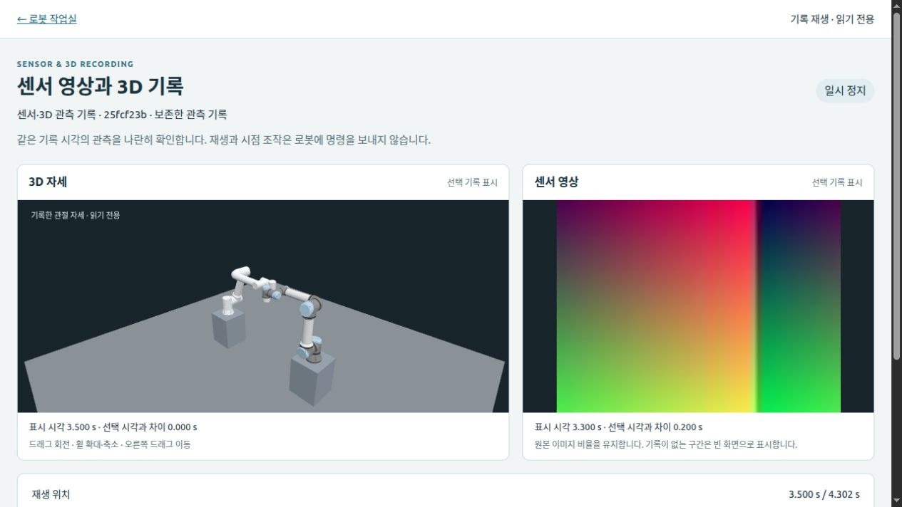
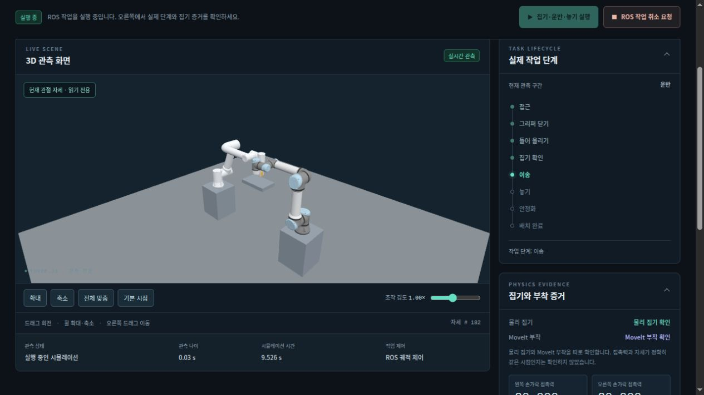
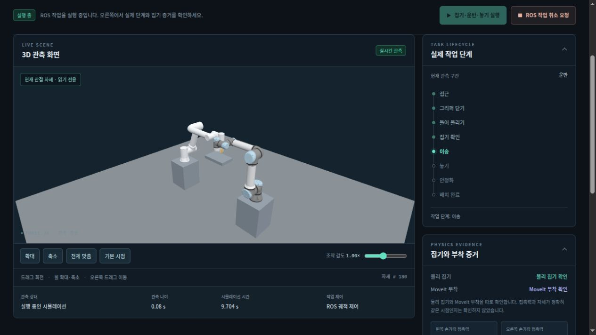

교체 가능한 동작 검증 환경
현재 기능을 유지하면서 로봇 모델·물리 엔진·계획기·제어 인터페이스·뷰어의 교체 경계를 단계적으로 정리합니다.
- 개발 방향
- 현장 설비의 설계 파일과 배치를 반영하고, 같은 환경에서 계획·실행·충돌·실패 원인을 확인하고 기록합니다.
- 구현 상태
- FR5·FR10·UR5e 단일 모델과 FR5·UR5e 공동 물리, 요청별 실행·취소·계측, Three.js 조작 화면을 구현했습니다. RGB8 이미지와 선택형 설치 환경 실행, TCP Pose 계획·승인, 센서·3D 기록 재생과 대표 ROS 집기를 로컬 검증했습니다. W08 대표 비교를 마쳤고 FR3 실험 모델의 대표 실행을 확인했습니다. 일반 센서·복잡한 CAD와 다른 엔진 실행은 후속 대상입니다.
- 도입 배경
- 계획한 경로와 실행 상태를 연결해 실패를 설명하고, 설치 환경이나 모델이 달라져도 필요한 부분을 바꾸어 검증할 수 있어야 합니다.
- 구현 방식
- MuJoCo·ROS 2·MoveIt 2로 동작 검증을 개발합니다. ROS 2는 익숙한 개발 스택과 센서 SDK 연계의 활용성을 고려한 현재 수단입니다. Three.js는 유지하며 공통 형상·상태·센서 공급원을 확장합니다.
현재 우선순위
- W01 간헐 지연의 원인 확인과 기존 실행 회귀 유지
- 검증한 ROS 집기를 다른 그리퍼·물체와 일반 조작 흐름으로 확대
- W08 표본·입력 확대와 FR3 동작·설치 환경 확대 검증
확장 기준
- FR5·FR10·UR5e를 초기 테스트 기준으로 사용
- 안정된 생성·실행·취소·종료 규약으로 지원 로봇 확대
- 기대 효과·변경 규모·선행 조건으로 새 제안 선별
실행할 세부 항목과 상태는 통합 작업리스트에서 관리합니다. 이 보고서는 2026-10-27의 작업 순서와 선택 근거를 보존하며, 구현 현황에는 2026-10-30의 고정 집기 작업·보존 기록 분석 연결과 대표 로컬 검증을 별도로 덧붙였습니다.
현재 구성과 검증 범위
- 모델·환경
- RobotProfile·Workcell과 생성 자산 해시, 이름 기반 관절·설치 자세를 공유합니다. 프로필과 생성기는 ROS·MuJoCo·제어기 설정에 아직 연결되어 있습니다.
- 계획·검사
- 상시 서버가 계획·실행 어댑터를 통해 MoveIt 계획·유효성 검사, 출발 시점 탐색, 최종 spline 검사와 실행을 연결합니다. 제한된 후보 중 처음 통과한 경로를 선택하며 최단 경로를 보장하지 않습니다.
- 실행·기록
- ROS 2의 FollowJointTrajectory로 팔별 궤적을 전달합니다. 요청 ID·중복 처리·취소·완료·추종 상태를 기록하고, MuJoCo 접촉·시계 인터록을 유지합니다.
- 표시·분석
- 별도 표시 작업자가 만든 형상·상태를 Three.js로 표시합니다. 공통 표시 형식과 ROS 없는 읽기 전용 기록 재생, RGB8 이미지 수신·이벤트 분석과 body·geom 계층을 구현하고 로컬 검증했습니다. 표시용 모델은 제어용 물리 시뮬레이션과 역할이 다릅니다.
GUI 시안의 실제 작업실 반영 · 2026-10-28
현재 구현 별도 HTML 시안에서 검토한 배치를 실제 Three.js 뷰어에 적용했습니다. 상단에서 조작·계획 검토·기록 분석을 선택하고, 왼쪽 객체 목록·가운데 3D 화면·오른쪽 작업 패널을 사용합니다. 메뉴 전환은 화면의 목적만 바꾸며 로봇 명령을 보내지 않습니다.
- 실제 모델의 body·geom 목록과 3D 형상 선택을 연결했습니다. 표시 모델과 실행 대상을 구분하고, 모델이 바뀌면 이전 선택을 제거합니다.
- 조작에서는 목표를 입력하고, 계획 검토에서는 같은 3D 화면에서 경로를 확인한 뒤 승인합니다. 패널은 접을 수 있으며 작은 화면에서는 보조 패널을 접거나 3D 화면 아래로 배치합니다.
- 하단에서 요청·취소 전달, Action 응답, 현재 정지 감시, 요청 종료, 현재 소유 프로세스를 따로 표시합니다. 취소 요청이 끝났다는 사실만으로 물리 정지나 자원 정리 성공을 표시하지 않습니다.
로컬 검증 독립 ROS 도메인 225의 로컬 뷰어(포트 8925)에서 계획 생성 → 경로 미리보기 → 승인 실행 1회를 완료했습니다. 후속 취소에서는 요청 취소 완료와 물리 정지 미판정, 소유 프로세스 실행 중을 구분해 표시했습니다. 320·390·1024 px 폭에서 가로 넘침이 없음을 확인했습니다. 기능 연결과 배치를 확인한 사례이며, 성능 비교나 장시간 반복 검증 결과는 아닙니다.
같은 UI의 집기 작업과 기록 분석 · 2026-10-30
구현·대표 로컬 검증 새 통합 작업실 8933에서 관절·TCP 조작과 고정된 FR5 집기·운반·놓기를 선택합니다. 같은 3D 화면과 작업 패널에서 실행·상태·취소를 연결하고, 작업별 ROS 도메인·모델·선택 세대를 대조합니다. 실행·승인 대기·센서 기록과 집기 소유권이 겹치면 작업 전환을 막습니다.
최종 소스 fd6cebc에서 실제 ROS 세 조건을 다시 확인했습니다. 오류 중단은 사용자 취소의 준비 대기와 분리했으며, 오류 분기는 단위 검사로 검증했습니다. 실제 ROS 치명적 오류 주입으로 기록하지 않습니다. 정상은 물리 해제·world 객체 복귀, 시작 중 취소는 native 미시작·목표 0개, 운반 중 취소는 5 mm 이상 실제 이동 뒤 세 제어기 정지와 소유 프로세스 정리를 확인했습니다. 일반 회귀는 시작·계획 생성·검토·폐기·종료이며 그 계획을 승인해 실행한 결과는 아닙니다.
기존 41자세·18합성 RGB 진단 기록을 같은 분석 패널에 가져와 공통 시간축으로 재생합니다. 새 집기 RGB 수집·이벤트 정렬이나 실제 카메라 동기화로 합산하지 않습니다. 새 UI의 실제 브라우저 PC·모바일 배치·영상은 접근 설정상 검수하지 않았습니다. 이전 여섯 서버와 영상은 전환 기간에 보존합니다.
2026-10-30 운영 조사: 여섯 로컬 웹 서버의 역할과 상태를 현재 뷰어 목록으로 정리했습니다. 화면별 동작 영상과 기능 비교에서 새 작업실과 별도 집기·기록 재생의 차이를 확인할 수 있습니다.
센서·3D 기록의 공통 재생 · 2026-10-29
같은 실행의 센서 영상과 3D 자세를 기록하고, 하나의 시간축에서 재생·일시정지·프레임 이동·속도 변경을 할 수 있습니다. 각 패널에 표본 시각과 선택 시각의 차이를 표시하며, 0.5초 이내의 이전 표본이 없는 구간은 빈 화면으로 보여줍니다. 두 트랙은 한 번의 조회로 선택하고 이미지 검증·디코드 후 함께 표시합니다.
대표 검증 실제 ROS 도메인 228에서 관절 자세 41개와 진단 RGB8 이미지 18개를 기록했습니다. 내부 영상 누락 구간, 원본 정수 시각, 저장 이미지 해시와 읽기 전용 재생 후 명령 재전송 없음을 확인했습니다. 브라우저에서 재생 완료·시각 이동·영상 누락 표시와 390 px 배치를 확인했습니다. 진단 패턴 입력이며 카메라 보정·하드웨어 동기화·동일 native step 또는 장시간 성능을 측정한 결과는 아닙니다.

ROS 집기·운반·놓기 · 2026-10-29
대표 로컬 검증 native MuJoCo 3.12·ROS 2·MoveIt 2를 연결하고 기존 Three.js 뷰어를 재사용합니다. FR5·UR5e가 함께 있는 물리 시뮬레이션에서 손가락 2개와 자유 블록을 포함한 형상 49개의 실제 자세를 표시합니다. UR5e는 자세를 유지하며 새 궤적을 보내지 않습니다.
FR5가 접근하고 그리퍼를 닫은 뒤 물체를 들어 올립니다. 접촉과 들림을 확인한 뒤 MoveIt에 부착해 운반·놓기를 계획합니다. 해제 후에는 물체의 안착과 world 객체 복귀를 확인합니다. 물리 집기, 계획상 부착, ROS Action 결과, native 정지, 프로세스 정리는 각각 표시합니다.
- 정상 작업: 팔·그리퍼 Action 6개와 해제·안착·정리 확인
- 30초 유지 진단: 시뮬레이션 시간 30.016초 동안 상대 위치 오차 최대 1.317 mm, 모든 관측 표본에서 양쪽 접촉 유지, 이후 Action 6개 완료
- 이동 중 취소: 운반 중 실제 이동을 확인한 뒤 취소, 자동 열기·분리 없이 정지·정리 확인
- 시작 중 취소: 동작 목표를 보내지 않고 정지·정리 확인
집기 모델에만 cone=elliptic과 impratio=10을 명시했습니다. 기본 작업 환경, 마찰·힘 설정과 원래 닫힘 자세를 기준으로 한 5 mm 한계는 유지하며, NoSlip 후처리는 사용하지 않습니다.
CI에서 확인한 처짐과 수정 근거
CI #133에서는 양쪽 접촉력이 약 20 N으로 유지돼도 물체가 TCP에 대해 조금씩 처졌습니다. 상대 위치 오차가 5 mm를 넘어 배치를 중단했고, 이전 설정의 별도 유지 검사에서도 약 5.014 mm로 실패했습니다. 두 실패 원본을 보존했습니다.
CI의 들림 상태를 격리된 native 3.12에서 복원한 60초 유지 진단의 최대 오차는 기존 설정 81.30 mm, 새 설정 1.959 mm였습니다. 저마찰·손가락 열기 대조는 실패했습니다. 이어 실제 ROS에서 위의 30초 유지와 전체 작업을 확인했습니다. 유지 진단은 CLI에서만 명시적으로 선택하며 일반 GUI 작업에는 추가하지 않습니다.
격리 진단은 기록한 상태를 새 물리 계산에 넣은 재현입니다. 미기록 solver 상태와 CI 모델 파일 전체를 복원한 연속 실행은 아니며, ROS 전체 지연이나 일반 성능 비교로 해석하지 않습니다. 시작 취소 때 SIGINT로 종료한 Python spawner는 정확한 이름·PID·명령과 신호 순서를 확인한 경우에만 별도로 분류합니다. 원본 실패와 native·launcher·프로세스 정리 검사는 유지합니다.

브라우저 검수 새 모델에서 정상 작업과 부착 상태의 취소, 소유 프로세스 정리를 확인했습니다. 데스크톱에서는 3D 카드 전체가 보입니다. 390 × 844 배치는 UI·형상 내보내기 소스 6개가 같은 이전 검수 기록으로 보존합니다. 이번 모바일 크기 요청은 데스크톱 크기를 반환해 새 모바일 검수로 합산하지 않았습니다.
고정 합성 환경의 대표 기능 검사입니다. 다른 그리퍼·물체, 실물 동작이나 일반 성공률을 검증한 결과는 아닙니다. 경로 검사는 이산 표본이며 접촉력 시각은 native step의 명목값입니다. 취소 후 멈춘 물리 시계의 접촉력을 현재 집기 유지로 재판정하지 않습니다. 기존 Python MuJoCo 3.14 독립 실험과 성능 표본은 합산하지 않습니다.

작업실 구성과 실제 연결 범위 · ROS 집기 실행과 기존 독립 실험. 상세 문서는 main의 최신본이며, 기존 측정 원본과 고정 구현 해시는 그대로 보존합니다.
현재 실행 경로
현재 표시 경로
W04~W06 · 현재 분리 경계와 후속 교체 대상
계획·실행의 분리 경계와 대표 RGB8 입력, 선택형 설치 환경 실행을 현재 스택에서 로컬 검증했습니다. 범용 Planner·Executor·Simulator 플러그인이나 ROS 2 없는 로봇 실행을 이미 제공한다는 의미는 아닙니다. 공통 모듈 경계에 현재 결합을 기록했습니다.
| 개발 항목 | 현재 제공 범위 | 후속 검증·확장 |
|---|---|---|
| 실행 기반·계측 | 단일 모델, FR5·UR5e 공동 물리, 계획 후보·계산 예산·최종 상태 검사, 요청·취소·완료 기록, 접촉 정지·출발 조정의 실제 시뮬레이션 시연 | 접촉 재현과 별도 환경 여유 검사·대표 회귀를 로컬 확인했습니다. 과거 간헐 정리 지연의 원인과 더 넓은 반복 평가는 남아 있습니다. |
| 검증·결과 도구 | 고정 suite·runner·결과 검사·공개 리포트, 같은 예산의 후보 1개/N개 비교와 실패·미실행 결과 보존 | 고정 회귀와 구분한 대표 입력·성능 표본 확대 |
| 뷰어 개선 1~6 | WebGL, 카메라·감도, 공급원 선택, 계획 검토, 형상 선택·맞춤·숨김·투명도, 필요 시 렌더링과 진단 | body·geom 계층과 명시한 TCP·Pose 입력을 로컬 확인했습니다. 일반 그리퍼 연결과 실제 센서 보정은 후속 작업입니다. |
| 계획 검토·승인 | 정확한 궤적 미리보기, 유효 시간·해시·시작 상태 검사, 일회 승인과 동일 궤적 실행 | 현재 검토 UI에 적용합니다. 호환 자동 계획·실행 API와 시연 경로도 유지합니다. |
| 공통 표시·기록 | 공통 형상·상태 형식, ROS 없는 읽기 전용 재생, RGB8 ROS→JPEG→HTTP와 요청·상태·이벤트 분석의 로컬 연결 | 실제 카메라의 보정·시간 동기화, 다른 센서와 장시간 부하 평가 |
| 설계 파일과 실행 | 단일 solid STEP 변환·미리보기, 명시한 환경·SHA의 실행 연결과 불일치 차단. 같은 합성 환경의 계획·승인·취소·홈 복귀와 별도 진단 접촉 정지를 로컬 확인했습니다. | 복잡한 CAD 충돌 근사와 다양한 설치 배치·반복 평가 |
| W07 기본 작업 | ROS TCP Pose 계획·승인에 이어 native 3.12·ROS 그리퍼·MoveIt 부착을 연결했습니다. FR5·검증용 평행 그리퍼·블록의 집기·운반·놓기와 취소 2조건을 로컬 확인했습니다. | 다른 그리퍼·물체와 일반 작업 편집을 추가 검증합니다. 기존 Python MuJoCo 3.14·로컬 DLS 실험은 별도 기록으로 보존합니다. 대표 ROS 집기 |
| W08 대표 비교 | 계획 검토 준비를 공통 종점으로 4조건×3회, 기능 사례 10개를 확인했습니다. 최종 warm 3회는 재검증 후 재사용했습니다. | 작은 목표 1개·조건별 3회 결과입니다. p95·큰 이동·다른 장애물·전체 실행 지연은 미측정입니다. 측정 조건과 원본 SHA |
| W09 모델 확대 | FAIRINO FR3 V6의 6축 실험 프로필과 생성 모델, FR3·FR5·FR10·UR5e의 읽기 전용 표시를 로컬 확인했습니다. | FR3 direct·MoveIt, 이동 중 취소, 신선한 정지 관측·홈 복귀와 native 5,040스텝·종료를 확인했습니다. 넓은 동작 범위와 실물은 후속입니다. 실험 모델 범위 |
| 자료·공개·운영 | 소개·뷰어·모션·성능 자료, 사진·영상, 영상 잘림 수정, 보존 문서 v1.6과 공개 사이트, 기능 브랜치→devel→main·필수 CI 6개 | 완료 항목을 다시 개발하지 않고 기능 변경에 따라 관련 문서와 상태 갱신 |
완료한 화면과 자료는 뷰어 개선 리포트와 프로젝트 소개에서 확인할 수 있습니다. 새 보고서 작성으로 기존 측정 원본과 버전별 영상·기록을 교체하지 않습니다.
과거 관측과 후속 진단
취소 후 정리 지연
관측 사실 과거 비교 시연의 취소가 중첩 실행까지 전달됐지만 최종 종료·정리가 지연된 사례가 있습니다.
미확정 정확한 대기 호출과 자원 수명 문제는 확정하지 않았습니다. W01에서 노드 해제·ROS 종료·소유 launch 종료·작업자 대기의 진행 시각과 스택 기록을 보강했습니다. 같은 간헐 증상은 재현되지 않았고, 별도의 접촉 후 취소·정리 회귀 통과를 과거 원인의 해결로 판정하지 않습니다.
공개 CI 실행 기록 · 취소 수신, 정지 확인, 작업 종료, 프로세스 종료를 각각 판정합니다.
기둥 근처 실행 접촉
관측 사실 기둥과 약 1.8 mm 떨어진 명목 경로가 검사를 통과한 뒤 실행 상태에서 접촉하여 네이티브 인터록이 정지한 사례가 있습니다.
로컬 진단 보존한 동일 경로에서 접촉을 재현하고 접촉 응답 전의 명목·실제 형상 차이를 대조했습니다. 별도 환경 여유 검사와 대표 고정 입력 6개의 회귀를 확인했습니다. 단일 실행의 차이를 일반적인 최악 추종 오차나 특정 관절의 원인·발생 빈도로 확대하지 않습니다.
과거 공개 CI 실행 기록 · W02·W03의 후속 로컬 진단은 검증 기록에서 구분합니다.
네이티브 종료 오류 수정 · 2026-10-28
종료 중 제어기 상태를 해제하는 동안 RT update가 진행될 수 있어 SIGSEGV가 발생했습니다. 제어 스레드를 종료한 뒤 ROS Context를 정리하도록 순서를 바꿨습니다. 후속 CI에서 제어기 활성화 요청이 RT 응답을 기다리는 종료 지연도 확인해, 이미 시작한 관리 요청을 마친 뒤 스레드를 종료하도록 보완했습니다.
같은 입력의 비교에서 수정 전에는 활성화 요청이 끝나지 않아 강제 종료가 필요했고, 수정 후에는 요청 완료 → 제어 스레드 종료 → ROS 정리를 확인했습니다. 준비 완료 상태의 실제 JTC 검사와 시계 미수신·정지·초기 신호 5조건도 통과했습니다.
별도로, 경로 검사 시점이 5,000개를 넘는 후보 때문에 전체 탐색이 중단되는 문제를 수정했습니다. 해당 후보만 거부하고 남은 후보를 검사하며, 충돌 검사 기준과 계산 한도는 유지합니다.
원본 실패와 최초 수정의 기록을 보존했습니다. 과거 W01의 간헐 지연은 같은 원인으로 확정하지 않았습니다. 종료 시험의 주입 결과는 성능 수치에 포함하지 않으며, 새 출력 차단을 즉시 물리 정지로 해석하지 않습니다. 원인·실패 원본·재검증 범위 · 후속 검증 근거
같은 팔 내부의 간섭 검사 보강 · 2026-10-29
CI #137의 회피 경로는 팔 사이 간격 128.619 mm와 MoveIt 상태 유효성 검사 3,256개를 통과했지만, 실행 중 FR5의 forearm과 wrist3가 접촉해 정지했습니다. 저장된 명목 궤적을 같은 native 엔진에서 정적으로 검사하자 두 형상이 겹치는 구간이 확인됐습니다. 같은 팔 내부의 native 간격을 별도로 검사하도록 범위를 확장했습니다.
계획 후보·최종 궤적·검토 승인·캐시 재사용에 10 mm 계획 여유를 적용하고, 목표를 보내기 직전 관측 상태에는 별도의 1 mm 시작 여유를 확인합니다. 기존 접촉 정지와 팔 사이·고정 환경 검사는 유지합니다. 이 값들은 실험용 허용 기준이며 추종 오차의 상한이나 실물 안전 거리로 측정한 값이 아닙니다.
- 실패 원본 궤적은 새 검사에서 목표 전송 전에 거부하고, 기존 통과 궤적은 받아들였습니다.
- 실제 ROS의 CLI·HTTP·계획 검토/승인 회귀에서 무접촉 실행과 정상 정리를 확인했습니다.
- 시각 계산 보완 전의 집기 실행 환경에서 정상 작업(Action 6개)과 물체 부착 후 운반 목표 전송 전 취소를 확인했습니다. 취소 뒤에는 계획상 부착과 물리 집기 미확인을 구분하며 자동 열기·분리·재시작을 하지 않습니다.
후속 코드 검토에서는 해시·형상 계산 뒤 시계 정보가 오래될 수 있는 경계를 확인했습니다. 전송 직전 수신 나이와 남은 시작 시간을 다시 검사하도록 보완하고 지연 주입 단위 검사로 차단을 확인했습니다. 앞선 CLI·HTTP·승인 실행은 이 시각 검사 보완 전의 실제 ROS 근거로 구분합니다.
별도 CI #139에서는 정확히 150 ms인 관측 간격이 부동소수 차감 오차로 상한을 넘는 문제가 확인됐습니다. 반올림된 native 정수 시각으로 비교하도록 고쳤으며 150 ms 기준과 실제 초과 간격의 거부는 유지합니다. 새 코드에서 정상 집기와 놓기 후 그리퍼를 여는 중 취소(Action 취소·물리 집기 미확인·정상 정리)를 브라우저로 확인했습니다. 기존 사진과 부착 직후 취소 기록은 이전 검수 근거로 보존합니다.
CI #140의 정상 집기는 통과했지만 30초 유지 검사에서는 실제 170 ms 관측 공백을 확인했습니다. 준비된 프레임을 순서대로 보존하는 제한된 FIFO와 관측 전용 신뢰성 전송을 적용하고, 넘침·원래 캡처 시각 기준 0.5초 초과를 오류로 처리합니다. 150 ms 간격 기준과 30초 유지·물리 판정은 그대로 유지합니다. 새 코드의 정상·30초 유지·이동 중 취소·시작 중 취소와 브라우저 정상·들림 후 취소를 확인했습니다. 정지 후에는 과거 집기 확인과 현재 미확인을 구분합니다. 원본 공백·수정·새 실제 검증
검사는 이산 표본이며 연속 시간 충돌 보증이 아닙니다. 명목 궤적의 최소값 −2.353 mm는 실제로 도달한 최대 침투량이 아닙니다. 정렬된 전체 추종 기록이 없어 추종 오차와 MoveIt/FCL 형상 차이의 정확한 기여는 확정하지 않습니다. 기존 v3/v4 사진·유지 진단·성능 원본은 보존합니다. 새 원격 CI와 배포 상태는 로컬 결과와 별도로 확인합니다.
원본 CI·소스 SHA·정적 재현·실제 ROS 및 집기 검증 · 실패 CI #137 · 이전 통과 CI #136
실행 전 파일 확인 중에도 관측·취소 처리 · 2026-10-29
main 후속 CI #143에서는 접근을 마친 뒤 그리퍼 닫기 목표를 보내기 전에 캡처 나이 0.5초 제한으로 실행을 거부했습니다. 작업 실패와 정상 정리 기록은 보존했습니다. 당시 세부 수신·확인 시간이 충분하지 않아 정확히 어디서 지연됐는지는 확정하지 않았습니다.
모델과 바이너리의 해시를 동기적으로 확인하는 동안 ROS 관측 처리가 밀릴 수 있는 경로를 찾아, 파일 확인을 별도의 소유 프로세스로 옮겼습니다. 기존 주 루프가 관측과 취소를 계속 처리하며, 모델·바이너리 일치 검사와 원래 캡처 시각 기준 0.5초 제한은 유지합니다. 늦게 끝난 확인 결과로 명령을 다시 보내지 않고 검사 프로세스와 자식 그룹의 최종 종료도 확인합니다.
집중 검사 47개와 전체 단위 검사 1,352개(1 skip), 모델 검사 89개(1 skip)를 통과했습니다. 별도로 같은 새 소스의 실제 ROS 정상·30초 유지·운반 중 취소·시작 중 취소와 브라우저 정상·들림 후 취소를 확인했습니다. 브라우저 취소는 운반 목표 전송 전이며 실제 운반 중 취소 검사와 구분합니다.

600 ms 확인 지연을 주입한 단위 검사는 확인된 위험 경로를 재현합니다. 원본 CI #143에서 같은 지연이 발생했다는 소급 증명은 아닙니다. 이전 관측 전달·팔 내부 간격·물리·성능 자료와 사진은 그대로 보존하며 새 원격 CI·병합·배포 결과는 로컬 근거와 구분합니다.
회피 경로를 검사한 뒤 시작 시각 확정 · 2026-10-29
devel 동기화 CI #146에서는 회피 경로의 팔 내부 간격 검사를 마쳤지만, 목표를 보내는 데 필요한 시작 여유가 0.1초 이하로 줄어 실행을 거부했습니다. 충돌 거부와는 다른 원인입니다. 원본 실패는 보존하며, 당시 어느 검사에서 얼마나 시간이 걸렸는지는 원본 기록만으로 확정하지 않습니다.
새 상대 경로는 형상·모델·정책 확인과 큰 근거 파일 저장을 먼저 마친 뒤, 기존의 1초 시작 여유를 처음 한 번만 확정합니다. 이후 현재 자세·파일 일치·관측 나이·취소·접촉 상태와 남은 여유를 다시 확인하고 목표를 보냅니다. 이미 시각이 지정된 경로는 원래 시각을 유지하며 늦으면 거부합니다.
첫 수정 뒤의 CI #147에서는 시작 시각 확정은 정상 동작했지만, 추가 확인 중 관절 상태의 수신 나이가 0.3186초로 늘어 0.3초 제한으로 실행을 거부했습니다. 큰 메시지 복사와 전체 해시 확인은 시작 시각 확정 전에 마치고, 이후 관절 상태의 새 수신과 시뮬레이션 시각의 전진을 함께 확인하도록 보강했습니다. 원래 수신 시각으로 나이를 검사하며 시작 여유와 취소·접촉 검사도 유지합니다.
최종 소스의 집중 검사 57개와 전체 단위 검사 1,365개(1 skip), 모델 검사 91개(1 skip)를 통과했습니다. 같은 소스로 CPU 3D 화면에서 준비·기본 경로 실행·출발 지연을 확인하고, 같은 상대 경로 묶음의 왼팔·오른팔·의도한 접촉 대조·회피 4조건을 실제 ROS에서 확인했습니다. 각 실행의 결과와 최종 정리도 함께 기록했습니다.
첫 수정 소스의 로컬 통과, 원본 CI #147의 거부, 최종 소스의 실제 검증을 구분합니다. 2.25초 준비 지연과 수신 나이 경계값을 재현한 검사, 원본 곡선의 명령 없는 재검사는 별도 진단입니다. 새 실행의 검사 시간·남은 여유는 해당 실행의 관측값이며 성능 개선율이나 원본 CI의 지연 측정값이 아닙니다. 팔 내부 간격의 10 mm 계획·1 mm 시작 기준과 기존 집기·재생 근거는 유지합니다.
현재 팔 사이 30 mm 계획·20 mm 관측 기준은 설비 전체와의 공통 여유가 아닙니다. 이산 표본·형상 근사 검사는 연속 시간이나 실물의 안전 인증으로 해석하지 않습니다. 수정 효과는 고정 입력과 인접 조건에서 확인하고, 재실행 성공만으로 과거 실패를 닫지 않습니다.
참고 기술의 역할과 반영 기준
외부 레퍼런스의 제안은 현재 구현과 개발 목표에 대조해 기대 효과·변경 규모·선행 조건을 평가합니다. 유용한 설계 패턴은 반영하고, 큰 런타임 변경은 구체적인 요구와 비교 결과가 생겼을 때 도입합니다.
| 참고 대상 | 기대 효과·반영안 | 변경 규모·선행 조건 | 판정 |
|---|---|---|---|
| Foxglove 패널 | 명령·상태·진단의 역할을 나누고 요청·응답을 드러내는 패널 구성 | 현재 Three.js와 검증된 백엔드 명령 규약에 적용합니다. Publish·Service Call 패널 자체는 계획기나 작업 완료 정책을 제공하지 않습니다. | W04·W05에 패턴 반영 |
| Rerun 시간축 | 실시간 상태와 기록 재생을 구분하고 시간·선택을 연결하는 분석 | 먼저 현재 화면의 요청·계획·상태·이벤트를 연결합니다. 임베딩 시 SDK·뷰어 버전을 고정하고 v0.39.0의 제어 API와 iframe의 한계를 확인합니다. | W05에 반영, 임베딩 조건부 |
| Behavior Tree | 작업 상태·재사용 단계·실패 결과·복구 경계 명확화 | W04·W07의 단계 규약을 먼저 정리합니다. BT 런타임 도입만으로 계획 속도가 개선된다고 보지 않습니다. | 규약 우선, 런타임 후속 |
| MoveIt Pro 계획·IK | IK·경로 탐색·충돌 검사·시간 후처리·실행을 나누어 측정 | 현재 입력·예산으로 대안을 비교합니다. 결정적 IK 해는 일정한 전체 계획 지연을 뜻하지 않으며 제품 버전별 API를 별도 확인합니다. | W08 평가 설계 반영 |
| Isaac Lab 제어 | 상위 동작 의도·관절 목표·물리 단계의 역할 분리 | 미분 IK의 관절 목표 계산과 장애물 전체 경로 계획을 구분합니다. 학습·대규모 병렬 환경 등의 요구가 생기면 엔진 비용을 평가합니다. | 경계 참고, 엔진 전환 보류 |
| MoveIt Servo | 조그·시각 피드백을 이용한 미세 보정 후보 | 연속 피드백과 제어권 인계·명령 유실·정지 정책이 필요합니다. 충돌 근처 감속·정지는 장애물 우회 경로 탐색과 역할이 다릅니다. | 구체적인 보정 요구 뒤 평가 |
| 궤적 캐시 | 반복되는 정적 구간의 계획 대기 감소 후보 | 기본 캐시의 충돌·Planning Scene 제약 누락과 시작 허용 오차를 고려합니다. 환경·시작·전체 경로를 재검사하고 불일치 시 새로 계획합니다. | 선택형 구현·대표 검증, 입력 확대 후 평가 |
| Humble 호환성 | 배포 버전과 실제 패키지에 맞는 도입 범위 확인 | 확인한 공식 Humble 배포 목록의 MoveIt 2.5.10-1에는 궤적 캐시 패키지가 없습니다. 소스 빌드 환경은 별도 조사하며 Rolling/main 예제의 즉시 적용을 가정하지 않습니다. | 새 의존성 도입 전 확인 |
외부 참고 기술의 정성 검토입니다. 외부 제품의 수치를 현재 시스템 성능으로 인용하지 않습니다. W08 로컬 비교는 별도 입력과 범위에 한정하며 외부 제품의 성능 순위를 뜻하지 않습니다. 공식 문서 확인일은 2026-10-27입니다.
작업 순서와 현재 진행
W04의 작업·실행 책임과 W05의 표시·시간축, W07의 고정 집기 작업을 같은 UI에 연결한 결과와 남은 순서는 뷰어 상태 리포트의 통합 계획에 정리했습니다. 전용 화면의 기존 검증과 새 작업실의 대표 HTTP 검증을 구분합니다. 집기 센서 수집과 일반 작업 편집은 후속입니다.
아래 W01~W09는 2026-10-27에 정한 의존 관계와 완료 조건입니다. 2026-10-29 현재 W01~W03의 진단 보강·대표 회귀와 W04~W06의 로컬 구현·대표 검증을 진행했습니다. W01의 간헐 지연 원인과 넓은 반복 평가는 열린 항목으로 유지합니다. W07은 TCP Pose와 독립 실험에 이어 대표 ROS 집기와 MoveIt 부착을 로컬 검증했습니다. W08은 대표 비교를 마쳤으며 W09는 FR3의 대표 실행을 확인했습니다. 다른 물체·그리퍼와 넓은 입력의 반복 검증은 남아 있습니다. 검토·CI·공개 반영은 별도로 확인합니다.
취소 후 종료·정리 지연
실패 입력을 보존하고 취소·타임아웃·접촉 정지의 판정을 나눴습니다. 작업 식별자·단계·신호 시각·정리 진행·스택 기록을 보강했으며 과거 간헐 지연의 재현 조건과 대기 위치는 남은 진단 항목입니다.
완료 조건
- 지연 위치와 소유 프로세스의 최종 상태 설명
- 정지 확인·작업 종료·프로세스 종료의 구분
기둥 접촉과 실행 추종 차이
보존한 경로를 바꾸지 않고 접촉을 재현해 명목 궤적·실제 관절 상태·접촉 기록을 같은 실행에 연결했습니다. 형상 근사·검사 간격·제어 추종의 기여도와 발생 빈도는 더 넓은 입력·반복에서 확인해야 합니다.
완료 조건
- 검사·전송 궤적의 일치, 환경 간격·관절 오차·접촉 시점의 대조
- 확인한 원인과 남은 불확실성의 구분
실행 회귀 기준 보강
접촉 후 취소·정리 경로와 별도 고정 환경 여유 검사를 보강하고 대표 고정 입력 6개의 회귀를 확인했습니다. 접촉·시계 감시와 최종 경로 검사는 유지하며 더 넓은 반복 평가와 간헐 지연 원인 확인은 이어갑니다.
완료 조건
- 고정 입력과 인접 조건에서 수정 효과·정상 취소·종료 확인
- 실패 원본과 수정 결과의 함께 보존, 재실행 통과 외의 원인 근거 확보
작업·계획·실행 책임 분리
W03의 회귀 기준을 바탕으로 MoveIt 요청 변환, 궤적 전송·취소, 상태 수신의 어댑터를 분리하고 대표 실제 계획 검토·승인과 재계획을 로컬 검증했습니다. 명령 종류·실행 방식·계획 전략을 구분합니다. coordinated와 departure_timing은 계획 전략으로 유지합니다.
완료 조건
- 단계별 입력·출력·완료·실패·취소 정의
- 관절 이름·순서·단위·좌표·제어 모드·시계 영역·신선도 규약 정의
- 명령 v1·호환 자동 실행·승인한 동일 궤적·모델/환경/정책/시작 상태 검사·중복 전송 방지 보존
공통 표시·센서와 시간축 분석
W04의 요청·이벤트 경계를 사용해 상태·계획·실행 이력을 연결했습니다. 대표 입력으로 RGB8 이미지를 선정해 실제 ROS 수신과 JPEG·HTTP 표시, 잘못된 입력·오래된 상태·재연결을 로컬 확인했습니다. body·geom 계층은 실제 모델에서 확인했으며 공구 의미 정보와 실제 카메라 보정은 남아 있습니다.
완료 조건
- 공급원·자산·좌표·단위·원천 시각·수신 나이·순번, 누락·재연결 검증
- 실시간·검토·기록의 구분과 기록 재생의 명령 미발생 확인
- 입력량 제한·최신 상태 우선 처리·유휴·비활성 탭·실패 복구 평가
설계 파일에서 실행 검증으로 연결
기존 STEP 미리보기와 W03·W04에서 이어서 명시한 실행 환경·SHA의 연결과 부정 조건 차단을 구현했습니다. 같은 대표 합성 환경에서 정상 계획·승인·취소·홈 복귀와 별도 진단 접촉 정지를 로컬 확인했습니다. 실행 환경 선택은 표시 모델 선택과 별도이며 복잡한 CAD의 충돌 근사·반복 평가는 후속 작업입니다.
완료 조건
- 명시적으로 선택한 환경을 MuJoCo·MoveIt·명령 서버에 동일하게 반영
- 환경 불일치 시 실행 거부와 환경 변경 시 이전 계획 무효화
- 같은 환경에서 계획·검토·승인·취소·접촉 정지 확인
TCP·Pose/IK·그리퍼와 집기
native MuJoCo 3.12에서 ROS 팔·그리퍼 제어와 MoveIt 부착을 연결했습니다. 물리적으로 들어 올린 사실을 확인한 뒤 계획상 물체를 부착하고 운반합니다. 놓은 뒤에는 해제·안착과 world 객체 복귀를 따로 확인합니다. 정상 작업과 이동 중·시작 중 취소를 로컬 검증했습니다. 다른 그리퍼·물체와 일반 작업 편집은 후속입니다. 기존 이동·접근·후퇴 영상에는 파지가 없으며 Python MuJoCo 3.14 독립 실험도 별도 기록으로 유지합니다.
완료 조건
- 접근·파지 확인·인출·운반·해제의 성공·실패 규칙과 대표 사례 검증
- 물체 부착·분리 상태 정의와 계획상 부착/물리적 파지·미끄럼 판정의 구분
캐시·플래너 비교
동일한 작은 FR5·UR5e 공동 목표와 5 s 협력 예산에서 RRTConnect off·RRT off·RRTConnect cold·warm을 각각 3회 비교했습니다. 모든 조건의 마지막 검토 환경 확인까지 계산 범위를 맞추고 요청 수신→plan_ready를 주 지표로 사용했습니다. 기능 사례 10개도 별도로 통과했으며, 최종 리포트에 실패 원본·예비 정정·품질·재검증 비용을 보존했습니다.
완료 조건
- 캐시 적중·실패·환경 변경·시작 불일치와 새 계획으로 복귀하는 동작 검증
- 고정 회귀와 별도 성능 표본·반복·실패 보존
- 충분한 표본의 p50·p95·최댓값, 작은 표본의 개별값·중앙값 제시
다음 테스트 로봇 등록
잠긴 제조사 자산에서 FAIRINO FR3 V6를 선정해 실험 프로필·관절·제어기·한계·끝단을 등록했습니다. 생성 모델과 4개 모델의 읽기 전용 표시를 확인했습니다. 대표 실제 direct·MoveIt 실행과 이동 중 취소 응답·Action 취소·신선한 정지 관측·새 홈 복귀·native·정리를 확인했습니다. 초기 이득의 실험 프로필이며 전체 작업 범위와 실물의 검증 수준으로 확대하지 않습니다. FR3 모델 문서에 출처와 실험 이득을 기록했습니다.
완료 조건
- 기존 사례와 같은 생성·실행·취소·종료 검증 통과
- 새 모델의 제어·단위·관절 대응과 적용 한계 기록
시스템 변경이 큰 후속 후보
| 후보·기대 효과 | 후순위 이유 | 착수 조건 |
|---|---|---|
| 선행 계획 · 대기 감소 | 단일 활성 요청에서 동시 계획·예상 시작 상태·무효화 처리로 확장해야 합니다. | W03·W04, 다음 상태 예측·실제 시작 재검증과 CPU 경쟁 평가 |
| Servo · 미세 보정 | 연속 명령과 궤적 실행 사이 제어권·유실·정지 정책이 필요합니다. | 구체적 보정 요구, TCP·피드백과 충돌·특이점·오래된 명령 처리 |
| Behavior Tree · 분기·복구 | 단계 규약 정리 전 런타임 변경은 실패 원인 분리를 어렵게 합니다. | W04·W07, 재시도·분기·복구의 복잡성과 기존 상태 관리 비용 확인 |
| MPC · 피드백 보정 | 계획기 비교보다 제어·상태·시간 구조의 변경이 큽니다. | W08에서 확인한 문제, 필요한 제어 주기와 실패 시 정지·복귀 기준 |
| Isaac Sim 어댑터 · 환경·센서 | 다른 엔진의 모델·시계·제어·접촉 의미를 대조해야 합니다. | 구체적 환경 요구, 같은 입력의 상태·취소·완료 비교 |
| 실물 어댑터 · 실행 비교 | 드라이버·TCP·추종·취소·보호 정지의 별도 검증이 필요합니다. | 사용 로봇·드라이버 선정과 실물 검증 절차 확보 |
선행 계획의 대기 0초나 대체 플래너의 일정한 계산시간을 완료 기준으로 미리 가정하지 않습니다. 개념 설계는 현재 규약에 반영하고 실제 도입은 조건을 만족한 개별 작업으로 진행합니다.
비교 평가 계획
W08 대표 비교 완료 아래 표는 원래 평가 계획과 후속 확대 기준입니다. W08의 작은 관절 목표 1개·조건별 3회 결과는 별도 측정 리포트로 연결합니다. 전체 작업 공간의 성공률·장시간 안정성·p95는 평가하지 않았습니다.
| 평가 영역 | 입력·측정 방법 | 판정 근거 |
|---|---|---|
| 실패·종료 | 보존한 실패 입력과 인접 조건에서 취소·타임아웃·접촉 정지를 나누고 단계별 시각·상태를 기록합니다. | 원인 설명, 정상 정지·완료·종료, 실패 기록 보존 |
| 추종·환경 여유 | 검사·전송 궤적, 실제 전체 관절 상태, 환경 최소 간격과 접촉을 같은 실행에 연결합니다. | 명목/실제 차이와 형상·표본·추종 요인의 분리 |
| 계획·캐시 지연 | 같은 모델·환경·공구·정책·목표·예산을 고정하고 워밍업·반복·순서를 명시합니다. 실패·취소와 재검증 비용도 포함합니다. | 전체 지연·성공률·경로 길이·최소 간격·계산 비용의 동시 비교 |
| 요청부터 결과까지 | 브라우저·클라이언트 요청, 서버 수신, 계획 왕복, 출발 탐색, 최종 검사, 예약 대기, 첫 이동, Action 완료·정착을 구분합니다. 사람이 계획을 검토·승인하는 대기는 계산 지연과 별도 구간으로 기록합니다. | 사용자 체감 대기와 실제 병목, 준비 비용·의도된 대기·승인 대기의 분리 |
| 표시·센서 | 고정 데이터량과 상태 주기로 실시간·기록·센서의 좌표·신선도·누락·재연결, 유휴·비활성 탭을 비교합니다. | 모델 일치·오래된 상태 식별·부하 제한·조작 복구 |
| 설치 환경·모델 | 자산·단위·변환·관절·충돌 근사를 고정하고 환경 변경·시작 불일치·새 로봇을 검증합니다. | 세 구성의 환경 일치, 오래된 계획 실행 거부, 기존 회귀 통과 |
- wall 시간과 simulation 시간을 구분합니다. 다른 프로세스의 monotonic 시각을 직접 빼지 않으며, 서비스 왕복에서 planning_time을 뺀 값을 순수 DDS 지연으로 단정하지 않습니다.
- 코드·환경·입력 해시·표본 수·반복·난수 조건·뷰어 동시 실행 여부를 기록합니다. 고정 회귀는 성능 표본이나 전체 공간 성공률과 구분합니다.
- p95는 꼬리 분포를 평가할 표본을 확보한 뒤 제시합니다. 작은 표본에는 개별값·중앙값·최댓값과 해석 한계를 남깁니다.
기존 수치의 범위: 1.975 → 1.537 s(wall)는 2026-10-21의 동일 입력 오프라인 출발 탐색 A/B에서 얻은 교차 입력 중앙값입니다. OMPL 자체나 요청부터 실행까지의 전체 지연 개선 수치가 아닙니다.
검토 계획은 일회 승인용이며 저장 기록의 읽기 전용 재생과 궤적 캐시는 구분합니다. W08의 선택형 메모리 캐시는 모델·환경·공구·정책·시작 상태와 연결 구간을 재검사하고 새 검토를 발급합니다. 조회 적중만으로 재사용이나 실행 권한을 인정하지 않습니다.
검토 범위와 운영 원칙
- 확인한 근거
- 설계 검토는 main 61e55ba의 문서·기존 공개 리포트·당시 미해결 CI 사례와 공식 참고자료를 대조했습니다. W01~W06의 기록에 W07 독립 실험과 대표 ROS 집기, 센서·3D 기록 재생, 구현 fbf98b7의 W08 최종 비교와 W09 대표 로컬 검증을 연결했습니다. 원격 검토·병합·배포 상태는 로컬 결과와 구분합니다.
- 설계 판단
- Three.js와 현재 스택을 유지하며 신뢰성 진단·규약·환경 일치부터 확장합니다. 각 변경은 작은 기능 브랜치에서 완료 기준을 확인하고 devel 검증 뒤 main으로 승격합니다.
- 별도 프로젝트
- 별도의 로컬 CAD 뷰어와 설비 공정 시뮬레이션은 각각의 요구와 일정으로 관리합니다. 필요한 자산·좌표·상태 규약은 맞추되 작업 순서를 그대로 가져오지 않습니다.
- 미검증 범위
- 대표 RGB8·합성 STEP 환경의 로컬 검증을 넘어선 실제 카메라 보정·일반 센서 통합·복잡한 CAD와 반복 실행, 범용 교체 어댑터, 넓은 입력의 플래너·캐시 성능, 다른 그리퍼·물체를 다루는 일반 작업 통합과 실물 집기·실행은 후속 검증 대상입니다.
원본 설계와 파생 메시가 담긴 현장 자산은 로컬에서 관리합니다. 공개 자료에는 비공개 경로·프로세스 식별자·원시 로그·세션 식별자를 넣지 않고 관측 사실과 미확정 해석을 구분합니다.
초기 설계(v1.1)와 별도 현황 갱신 데이터 · 초기 뷰어 방향 검토 · 이전 모션 방향 검토
이전 방향 보고서는 작성 당시의 검토 기록입니다. 현재 구현 상태와 남은 작업은 현황 갱신 및 통합 작업리스트를 기준으로 확인합니다.
근거와 확인 범위
최신 확인일: 2026-10-29 · 초기 설계 기준: 61e55ba7040910bb25758b6310e353f35ed92b6f · 구현 근거는 고정 커밋, 관련 HTML 보고서는 상대 링크로 연결합니다. 기존 출처는 당시 판단의 근거이며, W01~W06 후속 코드는 191c472, W08 구현은 fbf98b7에 고정합니다. W09의 고정 구현은 330b44a이며 대표 로컬 검증을 구분해 기록했습니다. 최신 작업리스트·구현 문서는 게시 후 갱신되는 main 문서입니다.
- 2026-10-28 현황 코드 191c472 · PR #52W01~W06의 로컬 구현·대표 검증과 검토·CI·병합 상태를 구분해 확인합니다.
- W07 devel 병합 · PR #55 · 독립 집기 사용법과 범위초기 ROS TCP Pose와 Python MuJoCo 3.14·DLS 집기의 기록입니다. 이후 native 3.12의 대표 ROS 집기는 아래 별도 근거로 연결합니다.
- 회피 경로 검사와 시작 여유의 후속 검증원본 CI146/147의 서로 다른 전송 전 거부, 첫 수정 소스의 로컬 통과, 최종 소스의 실제 CPU 3D·출발 지연·4조건 비교를 구분합니다.
- 실행 전 파일 확인과 관측·취소 후속 검증원본 CI143의 캡처 나이 거부와 지연층 미확정, 소유 검사프로세스와 같은 새 소스의 실제4조건·브라우저4회·최종 정리를 구분합니다.
- 관측 프레임 순서·원래 시각과 집기 재검증CI140 원본 정상/유지 실패, FIFO·캡처 나이 검사와 정지 후 물리 표시, 같은 새 소스의 실제 4조건·브라우저 검수를 구분합니다.
- 2026-10-29 팔 내부 충돌 검사와 재검증원본 통과·실패 CI와 고정 표본, 새 검사에서의 원본 거부/수용, 실제 ROS·집기와 로컬 회귀를 구분합니다. 10 mm 계획·1 mm 시작 기준은 실험 설정이며 실물 안전 보증이 아닙니다.
- 2026-10-29 대표 ROS 집기 검증 · 센서·3D 공통 재생 검증구현 9b7fc0f의 소스·모델 SHA, CI 처짐 원본, 격리 진단, 정상·30초 유지·취소 검사와 데스크톱 검수를 연결합니다. 이전 v3 근거는 별도 파일로 보존합니다. 로컬 기능 검증이며 성능 평가나 원격 CI 결과와 구분합니다.
- W08 최종 비교 리포트 · 고정 구현 fbf98b7 · PR #56최종 성능 12개 행과 기능 10개 사례, 동일 plan_ready 종점과 예비 실행 보존을 별도 문서에서 확인합니다.
- FR3 실험 모델 문서모델 생성·표시의 로컬 검증과 대표 실행·취소·정지·복귀 검증을 구분합니다.
- 작업·계획·실행 규약 · 이미지 입력과 상태 분석 · 설치 환경 실행 · 대표 검증 기록후속 구현의 현재 사용법과 로컬 검증 범위입니다. 원본 CAD·파생 메시·실행 로그는 게시하지 않습니다.
- 통합 작업리스트2026-10-27 개정 1.0의 W01~W09와 완료 조건을 본 보고서에 반영했습니다.
- 공통 모듈 경계현재 결합·정적 작업 환경 설명·상태/시간 규약·교체 어댑터의 의무를 확인했습니다.
- 공통 표시·기록·계획 검토 · 계획 검토 구현읽기 전용 재생, 현재 검토 UI와 호환 실행 경로, 유효 시간·시작 상태·일회 승인 범위를 확인했습니다.
- 설계 파일 반영단일 solid STEP·정규화·별도 overlay·box 충돌 근사·읽기 전용 미리보기와 실행 연결의 남은 범위를 확인했습니다.
- 모션 요청·구간 계측 · 상시 명령 서버계획 후보·예산·최종 검사·취소·시간 경계와 고정 회귀 검증의 한계를 확인했습니다.
- 오프라인 출발 탐색 · 기존 A/B 측정 리포트1.975 → 1.537 s(wall)의 원래 입력·반복·측정 범위를 유지합니다.
- 뷰어 개선 1~6 · 프로젝트 소개 · 개발 운영 절차완료한 화면·실행 사례·자료와 기능 브랜치→devel→main 절차의 근거입니다.
- 취소 사례 CI 실행 · 접촉 사례 CI 작업과거 실패의 공개 근거입니다. W01 진단 기록을 보강했지만 간헐 지연의 정확한 대기 위치는 미확정입니다. 접촉의 후속 재현·비교와 대표 회귀는 새 검증 기록에 구분했습니다.
- Foxglove Publish · Service Call메시지 발행·서비스 요청/응답 패널의 역할과 지원 연결 조건입니다. 장기 작업 완료는 별도 규약이 필요합니다.
- MoveIt Pro Behavior Treesv10의 Objective·Behavior·실행 상태 구성입니다. 현재 프로젝트의 런타임 통합이나 계획 지연 개선 근거로 사용하지 않습니다.
- MoveIt Pro Planners and Solvers경로 계획·Cartesian 계획·PoseIK의 역할과 결정적 해의 의미를 확인했습니다.
- Rerun 웹 임베딩 · WebViewer v0.39.0 API기록·실시간 입력, iframe 제어 한계, 시간·타임라인·선택 이벤트와 버전 호환 조건입니다.
- Isaac Lab task-space controller현재 자세·Jacobian·관절 상태에서 관절 목표를 계산하는 미분 IK의 범위입니다. 장애물 전체 경로 계획이나 학습 정책의 신뢰성을 보증하지 않습니다.
- MoveIt Realtime Servo실시간 명령·충돌/특이점 근처 속도 조절의 역할입니다. Rolling 문서의 인터페이스는 실제 배포 버전에 다시 대조해야 합니다.
- MoveIt Trajectory Cache유사 요청의 궤적 조회, 기본 캐시의 충돌·Planning Scene 제약 누락, 시작 허용 오차와 반복 정적 동작의 적용 조건입니다.
- Humble 배포 목록 · MoveIt 2 소스 빌드확인일의 공식 배포 목록과 main/안정 브랜치의 구분입니다. 특정 로컬 소스 빌드에 어떤 패키지가 설치됐는지는 별도 확인해야 합니다.